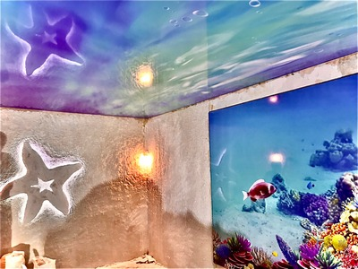
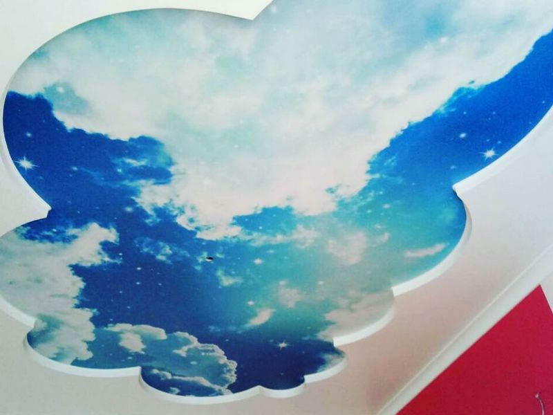

Натяжні стелі з фотодруком в Києві

Жодним з відомих на сьогодні стельових покриттів неможливо досягти ідеально гладкої та рівної поверхні, крім як за допомогою натяжної стелі. Практичність у поєднанні з красою робить такий вид обробки верхів приміщень найбільш затребуваним у сучасності. Натяжна стеля і так виглядає приголомшливо, але якщо ще й застосувати її декорування – естетичний ефект посилиться в рази. Якщо ви любите оригінальні чи нестандартні дизайнерські рішення для кімнати, тоді дана інформація саме для вас. У цій статті ми розповімо про найбільш затребуванні покриття з малюнком – натяжні стелі з фотодруком.
Рішення для фотодруку
Врахувати всі побажання господарів будинку можна лише за допомогою цього виду такої обробки. За бажанням над вашою головою розкинеться безкрає поле, усіяне квітами, або блакитне небо з пишними хмарами, а, можливо, це буде безтурботне море. Нерідко власники віддають перевагу імітації старовинних шпалер, абстрактним візерункам, зображенням космічного простору або малюнки улюблених звірят. Одним словом, фотодрук допоможе втілити будь-який задум. Але він буває різним і перед її застосуванням потрібно все добре зважити. Для цього необхідно детальніше розглянути усі види фотодруку.

Різновиди стель з фотодруком
Сучасний ринок пропонує споживачеві фотодрук у чотирьох варіаціях:
- екосольвентне покриття для полотна;
- ультрафіолетовий друк;
- об'ємні зображення;
- латексний друк.
Тепер докладніше про кожний варіант.
Екосольвентне покриття для полотна
Свою назву цей різновид друку отримав завдяки екосольвентним чорнилом, які й застосовуються для нього. Сам процес виробляється спеціальним широкоформатним принтером. Цей метод має вагомі плюси:
- Висока якість друку (1440 dpi), що гарантує в результаті супер реалістичне зображення, що практично повністю імітує справжнє полотно.
- Низька токсичність пігменту барвника і відсутність шкідливого запаху, що робить фарбу придатною для застосування у всіх приміщеннях.
- Мінімальна вартість товару;
- Вражаюча стійкість до впливу довкілля. Таке чорнило не вигоряє на сонці і не тьмяніє від повітря.
- Допускається застосування на глянці, при цьому лиск зберігається.
Але є у екосольвенту і своє «підводне каміння»:
- Низький ступінь щільності може стати бар'єром для застосування такої фарби на полотні ПВХ, малюнок буде просвічуватися. Найкраще для цього підходять тканинні варіанти покриттів. Якщо ви вже і вирішили застосувати екосольвентний пігмент, вибирайте світлі його відтінки.
- Через тривалий час висихання дані чорнила застосовуються тільки для стельових робіт. Але цей недолік можна вважати проблемою виробника.
- Максимально допустимий розмір – 350 мм, що не підходить для просторих приміщень.
Ультрафіолетовий друк
Цей різновид також названий ім'ям чорнила, що використовується для нього. Фарби, які застигають під впливом ультрафіолету, наносяться за допомогою того ж спеціального принтера для широкоформатного друку. УФ-друк має чудові якості:
- Висока насиченість частинками, що пігментують, дозволяє застосовувати таку фарбу на будь-якому вигляді натяжних стель: тканинних і полівінілхлоридних.
- Чистота та екологічність ферменту робить його придатним для дитячих кімнат та кухонь.
- Стійкість до вологи, тому таку стелю можна сміливо мити водою.
З мінусів можна назвати лише такі значні нюанси:
- Вища ціна, якщо порівнювати з екосольвентним друком.
- Максимально допустимий розмір малюнку досягає 220 мм. Якщо потрібно більше, то шва не уникнути.
- Якщо у вас вже встановлено глянцеву стелю, то при нанесенні УФ-барвника малюнок заб'є блиск і стане матовим.
Об'ємні зображення
Малюнки, які виглядають об'ємно, сьогодні модно називати тривимірними або 3Д. Про достоїнства тут і говорити не потрібно – ви отримаєте реалістичну картину з опуклим зображенням. Однак такого ефекту можна досягти тільки при монтажі конструкції на кілька рівнів. Наприклад, перший ярус буде напівпрозорим із ПВХ-плівки, а другий – тканинним із щільною текстурою. На непрозорий рівень можна завдати бурхливий океан, а на той, що нижче – дельфінів. Таким чином, при будь-якому куті огляду ви будете бачити імітацію хвиль.
Якщо ж хочете досягти подібного результату на однорівневій стелі, будьте готові, що ефект 3Д буде видно лише під певним градусом перегляду, наприклад, з входу.
Латексний друк
Спеціально для цього різновиду фотодруку на натяжних стелях були винайдені плотери, які і наносять латексне чорнило. Цей різновид найбільш популярний, оскільки має масу переваг:
- Можна нанести малюнок будь-якого розміру за бажанням замовника.
- Відмінна роздільна здатність друку з фотографічною якістю.
- Чорнила не токсичні та не мають неприємного запаху.
- Застосовується на будь-яких поверхнях однаково красиво виглядає і на ПВХ-полотні, і на тканинному.
Бар'єром для латексного фотодруку може стати лише її дорожнеча, порівняно з попередніми вущими варіантами, та відсутність ефекту намальованої картини.
Рекомендації щодо вибору малюнка для конкретного приміщення
Цілком природно, що не кожен малюнок буде доречним у тому чи іншому приміщенні. Якщо ви досі не можете визначитися, що і де надрукувати у своєму будинку, ми спробуємо дати кілька слушних порад, які полегшать вибір. Отже:
- Спальня насамперед є місцем відпочинку після насиченого трудового дня та кімнатою усамітнення. З цієї причини малюнок повинен розташовувати до розслаблення та медитативного настрою. А якщо врахувати той факт, що найчастіше в таких кімнатах використовують глянцеві полотна з полівінілхлориду, то ідеальними варіантами стануть латексний та УФ-друк. Найкраще наносити натуралістичні зображення кольорів, полів або неба.
- Якщо для дитячої кімнати ви вибрали натяжну стелю, то малюнок на ньому не повинен відволікати дитину від занять або ігор, що розвивають. Найкраще застосувати тканинне матове полотно та екосольвентний фотодрук. Зображення, звичайно, вибирайте залежно від статі, віку та переваг дитини.
- Вітальню можуть прикрасити будь-які малюнки, які перегукуються з вашими уподобаннями та іншими предметами меблів. Тільки після вибору візерунка можна визначитися з видом друку. Якщо це панорама нічного міста, то її ідеально передасть фотографічна латексна фарба. Настрій картинного полотна найкраще зберегтися при екосольвентному друку. У маленькій гостьовій кімнаті потрібен соковитий і насичений малюнок, який має силу недорогу УФ-фарбу.
- На кухні важлива чистота, у тому числі стелі. Найпрактичніше буде застосувати ПВХ-плівку і розписати її латексом або ультрафіолетовими фарбами. Лідирують зображення фруктів, овочів та квітів.
- Для робочого кабінету важко щось порекомендувати, оскільки тут все вирішують особисті побажання. Єдине, що найкраще як обробка підходить матове покриття, а для нього показані будь-які фарби. Наносите будь-що – від біблійних сюжетів до сюрреалістичних картин Далі – і все буде однаково красиво.
Таким чином, натяжні стелі з фотодруком можуть стати справжньою окрасою будь-якого приміщення.
Готові зображення чи індивідуальний малюнок
Компанія Nova Stelya має колекцію вже підготовлених зображень для нанесення на полотно натяжної стелі. Це малюнки з різних тем: від геометричної абстракції, до репродукцій картин знаменитих художників. Вище ми вже розповідали, як обрати малюнок для натяжної стелі. Якщо від кількості варіантів, що сподобалися, розбігаються очі, ви завжди можете порадитися з нашими дизайнерами. Картинку можна підібрати під колірну гаму, загальну концепцію або за власними уподобаннями.
З індивідуальними зображеннями складніше. Іноді клієнт хоче, щоб у нього був єдиний і неповторний малюнок або на стелі має бути зафіксовано щось важливе для нього. Але далеко не всі фото та цифрові зображення підходять для нанесення за якістю та параметрами. Тому наші фахівці або зможуть обробити ваш варіант картинки, щоб він підходив під необхідні параметри, або запропонують свій максимально схожий малюнок.
Як доглядати за натяжною стелею з фотодруком?
Щоб натяжна стеля з фотодруком виглядала ідеально багато років, за ним потрібно правильно доглядати. Засоби догляду залежатимуть від того, на якому матеріалі та яким способом зроблено нанесення. Екосольвентні чорнила менш стійкі, ніж УФ, і глянсове полотно вимагає більшої обережності, ніж матове.
Фахівці вивели кілька правил, яким потрібно слідувати, щоб не пошкодити малюнок чи полотно:
- Використовувати тільки м'який мильний розчин, засіб для нього має бути без ароматів, барвників та кремів.
- Виключити будь-які агресивні речовини та абсорбуючі частинки.
- Не використовувати губки для миття посуду або ганчір'я. Підійде тільки м'яка мікрофібра або штучна замша, купити серветки можна в магазинах для автомобілістів.
- Мити потрібно легко, без натиску, дуже бажано не використовувати швабри, але якщо висота занадто велика, слідкуйте, щоб на інструменті не було гострих кутів і деталей.
- Не можна відпарювати стелі з фотодруком, знімати з них пил можна тільки пилососом, тримаючи щітку на відстані від полотна.
Натяжні стелі з друком – це витвір сучасного інтер'єрного мистецтва. Щоб виглядали вони саме так, потрібна відмінна якість друку та установки, тому звертайтеся до надійної компанії, наприклад Nova Stelya.
Часті запитання та відповіді
🤗 Чи можна одночасно нанести на натяжну стелю два зображення?
Нині такі подвійні зображення у самому тренді. Наприклад, чорно-біла та кольорова частина одного малюнка. Наші фахівці можуть підготувати та нанести такі зображення.
🤗 Що таке псевдо 3d-зображення на натяжних стелях?
Об'ємні зображення наносяться на один шар полотна. Це спеціальні малюнки чи фото. А псевдо 3d – це дві частини одного малюнка, нанесені на два полотна, розташовані один під одним. Причому нижнє прозоре, а верхнє повинно бути матовим.
🤗 Скільки коштує нанести зображення на стелю?
Ціна залежатиме від матеріалу полотна та способу нанесення. Також має значення розмір картинки. Кожен проект розраховується індивідуально.
🤗 Чи можна за допомогою фотодруку скоригувати розміри приміщення для встановлення натяжної стелі?
Це добре відомий і широко використовується дизайнерами прийом. За допомогою правильно підібраного та розташованого зображення можна розширити, подовжити кімнату, візуально підняти стелю, навіть зробити кімнату світлішою.
🤗 Яке полотно можна нанести фотодрук?
На будь-яке. На кожній основі малюнок виглядає по-різному. Вважається, що найкраще зображення виглядає на матовому полотні ПВХ або тканині.